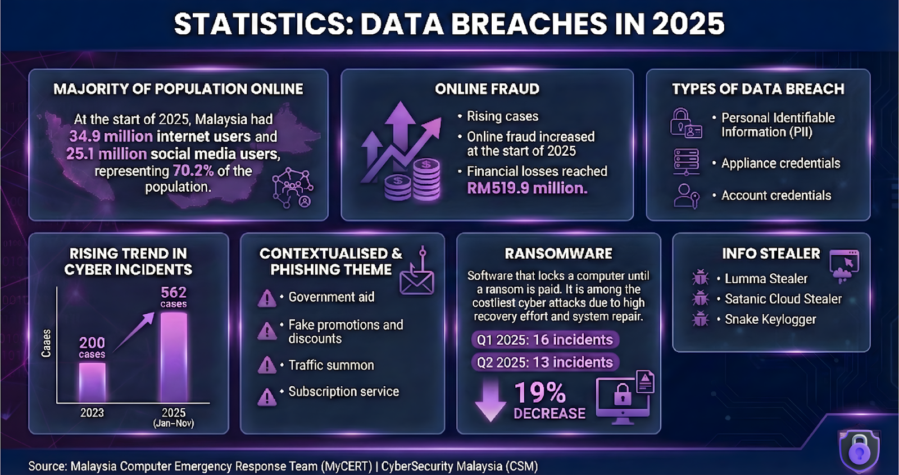
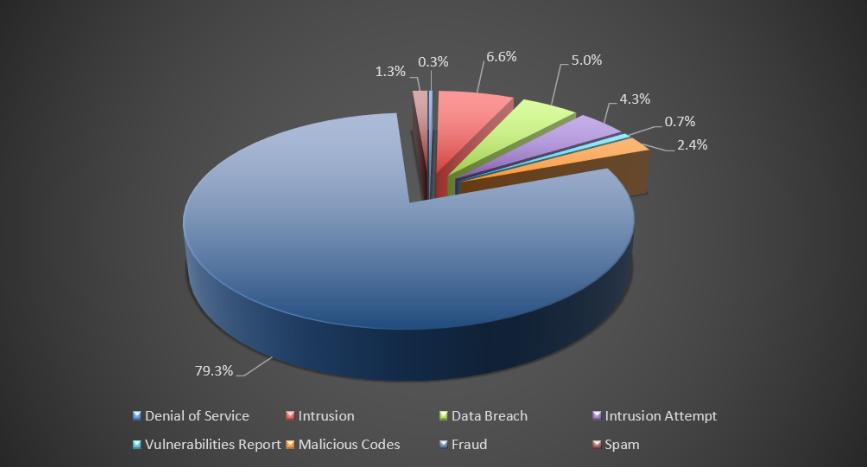
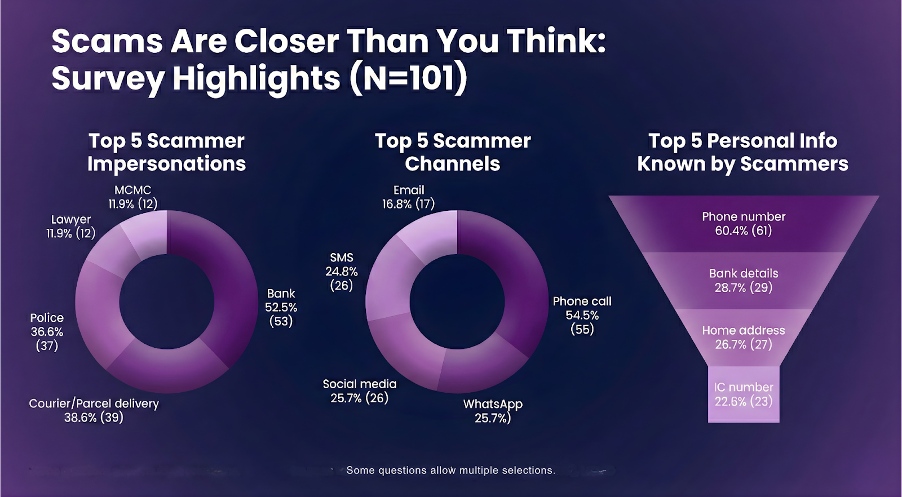
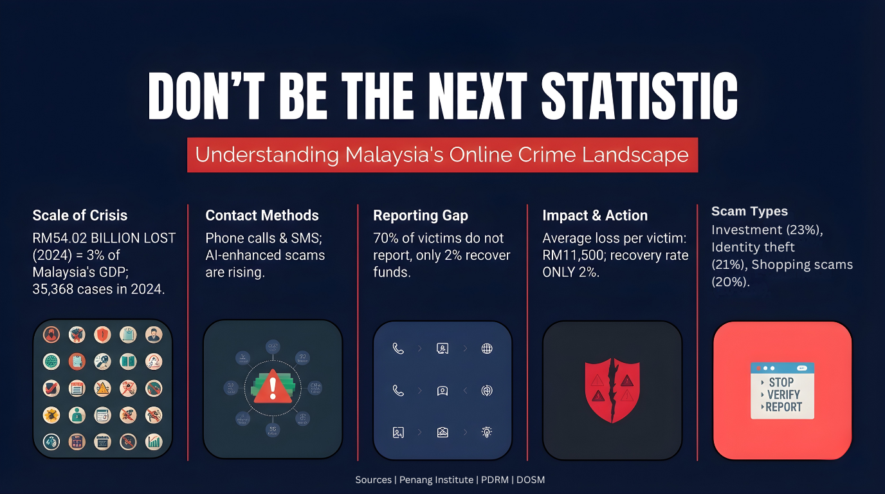
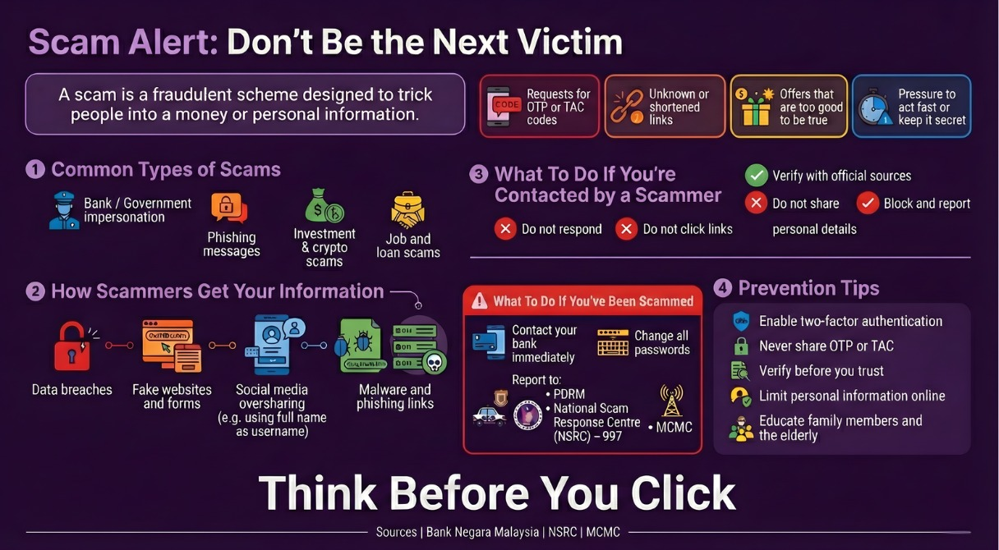

Visual Insights into Malaysia's Cybercrime Landscape
A data breach occurs when sensitive or personal information is accessed, stolen, or disclosed without authorization, posing serious risks to individuals and organizations.
At the start of 2025, Malaysia had 34.9 million internet users and 25.1 million social media users, representing 70.2% of the population.

Source: Malaysia Computer Emergency Response Team (MyCERT)
According to MyCert, there are three types of data breach which are Personal Identifiable Information (PII), Appliance Credentials, and Account Credentials.
Fraud is a persistent problem in the community, affecting a wide range of individuals, end users, and organizations, including professionals, students, and small and large businesses.
Because of the public's continued lack of understanding, which makes them an easier target, it has become the preferred strategy of criminals.
This quarter, 1,633 fraud incidents were resolved, a 45% increase from Q1 2025.
Based on current patterns, ransomware outbreaks will continue to rise, affecting Malaysian businesses and vital industries in 2025.
| Categories of Incidents | Quarters | Percentage (%) | |
|---|---|---|---|
| Q1 2025 | Q2 2025 | ||
| Denial of Service | 6 | 7 | 17 |
| Intrusion | 132 | 136 | 3 |
| Data Breach | 195 | 103 | -47 |
| Intrusion Attempt | 101 | 89 | -12 |
| Vulnerabilities Report | 38 | 15 | -61 |
| Malicious Codes | 43 | 49 | 14 |
| Fraud | 1126 | 1633 | 45 |
| Spam | 16 | 26 | 63 |
| TOTAL | 1657 | 2058 | 24 |

Businesses and internet users must constantly take appropriate security precautions against ransomware events, even though the number of reported ransomware instances has somewhat dropped this quarter.
Fighting ransomware and other viruses requires effective backup management, password security, and cybersecurity awareness.
In order to mitigate ransomware attacks, it is also crucial for organizations and the general public to have backup procedures, policies, and best practices.
In light of the RM2.7 billion lost to cybercriminals in 2025, we surveyed 101 individuals to map out exactly how these scams happen. This infographic breaks down the scam lifecycle, showing you how scammers start their approach.

Knowledge is your best defense. Let's break down this infographic to see how online crime is evolving in Malaysia.

Knowing how a scam works is your first line of defense at a time when online dangers are always changing. The following visual provides you with a clear road map on how to recognize, stop, and react to these fraudulent schemes by dissecting the typical strategies used by scammers to compromise your financial and personal information.
